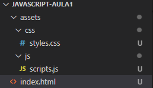

Na construção de uma página web devemos organizar os diversos arquivos em pastas.
A pasta assets guarda as ferramentas utilizadas, sejam imagens, arquivos de css ou javascript, etc. Tudo o que não é html.
Numa estrutura básica os arquivos de CSS e Javascript devem armazenandos cada um na sua pasta separada conforme a imagem.
